Next: Tolerances and Ill Conditioning Up: Variables and Constraints Previous: Variables
A constraint in Gurobi captures a restriction on the values that a set of variables may take. The simplest example is a linear constraint, which states that a linear expression on a set of variables take a value that is either less-than-or-equal, greater-than-or-equal, or equal another linear expression. Recall that Gurobi works in finite-precision arithmetic, so constraints are only satisfied to tolerances. Tolerances can be tightened to reduce such violations, but there are limits to how small the violations can be - errors are inherent in floating-point arithmetic.
The available constraint types are linear, SOS, quadratic, and general.
A linear constraint allows you to restrict the value of a linear expression. For example, you may require that any feasible solution satisfy the constraint 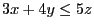. Note that the matrix-oriented Gurobi API's (C, MATLAB, and R) require the right-hand side of a linear constraint to be a constant, while the object-oriented APIs (C++, Java, .NET, and Python) allow arbitrary linear expressions on both sides of the comparator.
The computed solution should satisfy the stated constraint to within FeasibilityTol (although it may not in cases of numerical ill-conditioning - we'll discuss this shortly).
Gurobi supports a limited set of comparators. Specifically, you can constrain an expression to be less-than-or-equal, greater-than-or-equal, or equal another. We do not support strict less-than, strict greater-than, or not-equal comparators. While these other comparators may seem appropriate for mathematical programming, we exclude them to avoid potential confusion related to numerical tolerances. Consider a simple example of a strict inequality constraint on a pair of continuous variables: 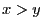. How large would 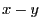 need to be in order to satisfy the constraint? Rather than trying to embed a subtle and potentially confusing strategy for handling such constraints into the solver, we've chosen not to support them instead.
An Special-Ordered Set, or SOS constraint, is a highly specialized constraint that places restrictions on the values that variables in a given list can take. There are two types of SOS constraints. In an SOS constraint of type 1 (an SOS1 constraint), at most one variable in the specified list is allowed to take a non-zero value. In an SOS constraint of type 2 (an SOS2 constraint), at most two variables in the specified, ordered list are allowed to take a non-zero value, and those non-zero variables must be contiguous in the list. The variables in an SOS constraint can be continuous, integer, or binary.
Again, tolerances play an important role in SOS constraints. Specifically, variables that take values less than IntFeasTol (in absolute value) are considered to be zero for the purposes of determining whether an SOS constraint is satisfied.
An SOS constraint is described using a list of variables and a list of corresponding weights. While the weights have historically had intuitive meanings associated with them, we simply use them to order the list of variables. The weights should be unique. This is especially important for an SOS2 constraint, which relies on the notion of contiguous variables. Since the variables in the SOS are ordered by weight, contiguity becomes ambiguous when multiple variables have the same weight.
It is often more efficient to capture SOS structure using linear
constraints rather than SOS constraints. The optimizer will often
perform this conversion automatically. This is controlled
with two parameters: PreSOS1BigM
and PreSOS2BigM. The conversion
is done by
adding constraints of the form 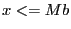, where  is the
variable that participates in the SOS constraint,
is the
variable that participates in the SOS constraint,  is a binary
variable, and 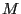 is an upper bound on the value of variable
is a binary
variable, and 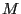 is an upper bound on the value of variable  .
Large values of can lead to numerical issues, so these parameters
control the maximum value of that can be introduced by this
conversion. SOS constraints that would require a larger value aren't
converted.
.
Large values of can lead to numerical issues, so these parameters
control the maximum value of that can be introduced by this
conversion. SOS constraints that would require a larger value aren't
converted.
A quadratic constraint allows you to restrict the value of a quadratic expression. For example, you may require that any feasible solution satisfy the constraint 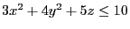. Note that the matrix-oriented Gurobi API's (C, MATLAB, and R) require the right-hand side of a quadratic constraint to be a constant, while the object-oriented APIs (C++, Java, .NET, and Python) allow arbitrary quadratic expressions on both sides of the comparator.
The computed solution should satisfy the stated constraint to within FeasibilityTol. Quadratic constraints are often much more challenging to satisfy than linear constraints, so tightening the parameter may increase runtimes dramatically.
The algorithms that Gurobi uses to solve quadratically constrained problems can only handle certain types of quadratic constraints. Constraints of the following forms are always accepted:
The previously-described constraints are typically handled directly by the underlying optimization algorithms (although not always). Gurobi also includes an additional set of constraints, which we collectively refer to as general constraints. General constraints are a convenience feature, designed to allow you to capture certain relationships between variables without having to immerse yourself in the often esoteric details of how to model these relationships in terms of the more fundamental constraints of MIP. Capturing a single one of these general constraints can often require a large set of linear and SOS constraints, plus a number of auxiliary decision variables. By supporting them directly in the Gurobi API, we simplify the modeling process by performing the transformation to a corresponding MIP formulation automatically and transparently during the solution process.
Gurobi supports a number of different types of general constraints, each having its own syntax and semantics:
As stated above, each general constraint has an equivalent MIP
formulation that consists of linear and SOS constraints, and possibly
auxiliary variables. Thus, you could always model such constraints
yourself without using a Gurobi general constraint. For example,
the MAX constraint
can be
modeled as follows:
Those slack variables and the remaining constraints model
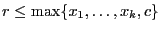, which is more complicated.
In addition to the explicit slacks, this requires the introduction of
binary auxiliary variables
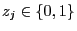.
The SOS1 constraints state that at most one of the two variables 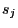 and
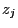 can be non-zero, which models the implication
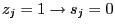.
Due to the third constraint, one will be equal to  and thus at
least one will be zero.
Hence, 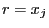 for at least one
and thus at
least one will be zero.
Hence, 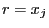 for at least one  due to the first constraint,
or 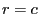 due to the second constraint.
due to the first constraint,
or 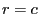 due to the second constraint.
Tolerances play a role in general constraints, although as you might expect, the exact role depends on the constraint type. Generally, violations in the resultant will be smaller than the feasibility tolerance, and integrality violations in integer resultants will also satisfy the integrality tolerance.
If a model contains general constraints, then Gurobi adds the respective MIP formulations for those constraints during the solution process. In this respect, general constraints are just a means of concisely capturing these relationships between variables while removing the burden of creating an equivalent MIP formulation. However, general constraints have another potential advantage: Gurobi might be able to simplify parts of the MIP formulation if it can prove during presolve that the simplified version suffices for the correctness of the model. For this reason, Gurobi might be able to produce a smaller or tighter representation of the general constraint than you would get from the most general formulation. For example, it might be the case that is already implied by the other constraints in the model, so that a simple set of inequalities